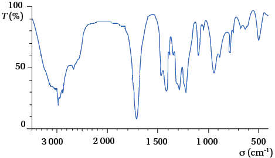
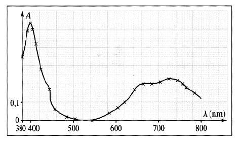
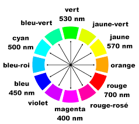

Acide butyrique
Les travaux de Crevreul lui ont permis d’isoler un acide gras à quatre
atomes de carbone, qu’il a nommé « acide butyrique », dérivé du latin
butyrum signifiant « beurre », à cause de son odeur
caractéristique de beurre rance. Pour la suite, l’élément but(y)- a été
repris pour former les noms de molécules à quatre atomes de carbone
dont, avec le suffixe -ane des alcane, celui du butane.
L’acide butyrique est un acide carboxylique possédant une chaîne carbonée, dérivée du butane. Il est présent dans le couple acide butyrique/ion butyrate (/).
Déterminer le schéma de Lewis de l’acide butyrique. (0,5pt)
Justifier le caractère "acide" de la molécule. (1pt)
Écrire la demi-équation associée à l’acide butyrique. (0,5pt)
Écrire l’équation de la réaction mise en jeu lorsque l’acide butyrique est mis dans l’eau. (1pt)
On réalise une solution d’acide butyrique à partir d’une masse de 2.2 mg dissous dans 500 mL d’eau. En partant de l’hypothèse que tout l’acide réagit avec l’eau, déterminer le pH de la solution obtenue. (1pt)
Le butanoate de méthyle est un composé chimique utilisé comme arôme pour son odeur de pomme. Il est obtenu à partir de l’acide butyrique.
Recopier puis compléter le schéma de Lewis du butanoate de méthyle suivant, puis identifier les éventuels groupes fonctionnels. (0,5pt)
Préciser si l’ester formé a un caractère acide. (0,5pt)
Attribuer chacun des spectres suivants à la molécule (acide butyrique ou butanoate de méthyle) correspondante en justifiant. (1pt)

On dispose d’une solution \(S_1\) de chlorure de nickel ( ; ) de concentration \(c_1\) en soluté apporté. on souhaite déterminer cette concentration de trois manières différentes :
en mesurant la conductivité de la solution : on trouve \(\sigma\) = 7.556 mS cm−1
en mesurant l’absorbance l’absorbance de la solution : on obtient \(A\) = 0.663 à \(\lambda\) = 720 nm
en faisant réagir \(V\) = 10.0 mL de la solution avec \(V\) = 10.0 mL d’hydroxyde de sodium de concentration \(c_2\) = 0.100 mol L−1, il se forme de l’hydroxyde de nickel insoluble. On mesure alors la conductivité de la solution \(\sigma_f\) = 8.784 mS cm−1.
Déterminer la couleur apparente d’une solution de chlorure de nickel. (1pt)
Déterminer la concentration en quantité de matière \(c_1\) obtenue par la première méthode. (1pt)
Déterminer la concentration en quantité de matière \(c_1\) obtenue par la deuxième méthode. (1pt)
Écrire l’équation de la réaction de précipitation entre les ions et les ions hydroxyde . On fera apparaître, dans ce cas précis, les ions spectateurs, présents en solution. (1pt)
Établir l’expression de la conductivité \(\sigma_f\) en fonction des concentrations \(c_1\) et \(c_2\) et des conductivités molaires ioniques des ions présents à l’état final. (2pts)
En déduire la valeur de la concentration \(c_1\). (1pt)


Données :
| Conductivités molaires ioniques à 25 °C, tenant compte du nombre de charges : | Coefficient d’absorption molaire des ions nickel à 720 nm : |
| \(\lambda\)() = 7.6 mS m2 mol−1 | \(\epsilon\) = 22.1 L mol cm−−1 |
| \(\lambda\)() = 9.9 mS m2 mol−1 | Longueur de la cuve de spectrophotométrie : |
| \(\lambda\)() = 19.8 mS m2 mol−1 | \(l\) = 1.0 cm |
| \(\lambda\)() = 5.0 mS m2 mol−1 |